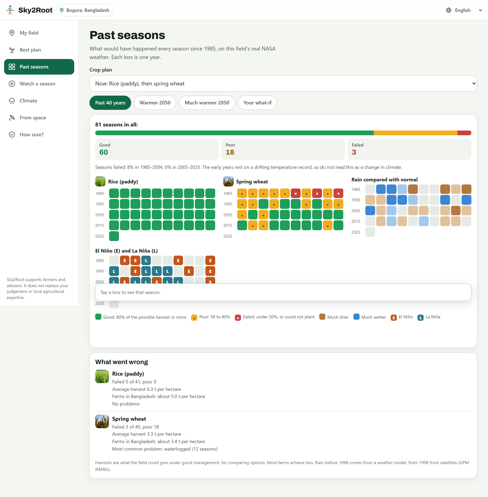
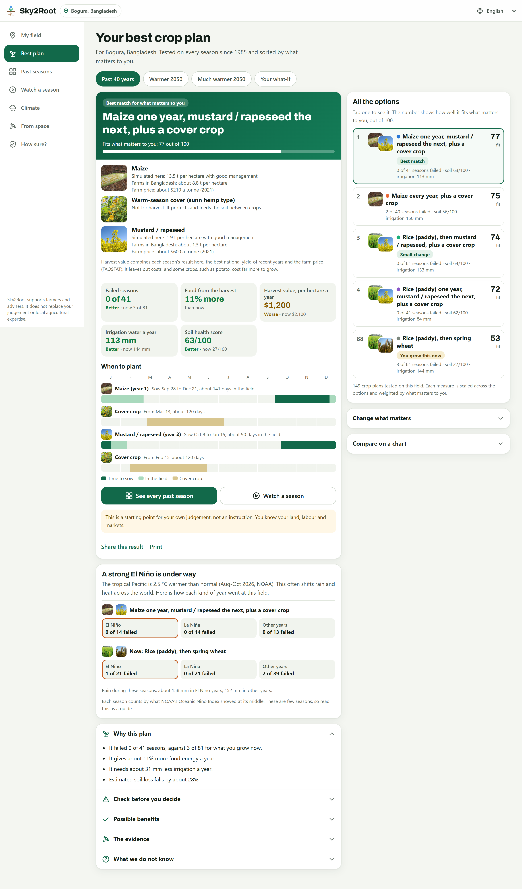
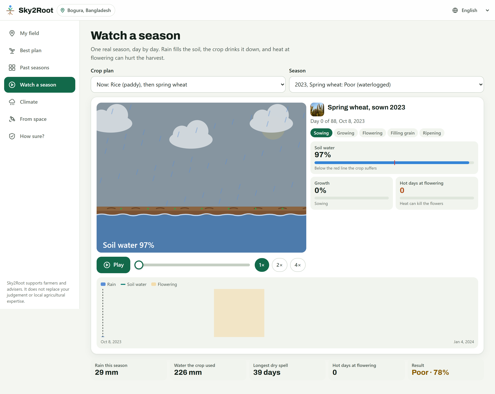
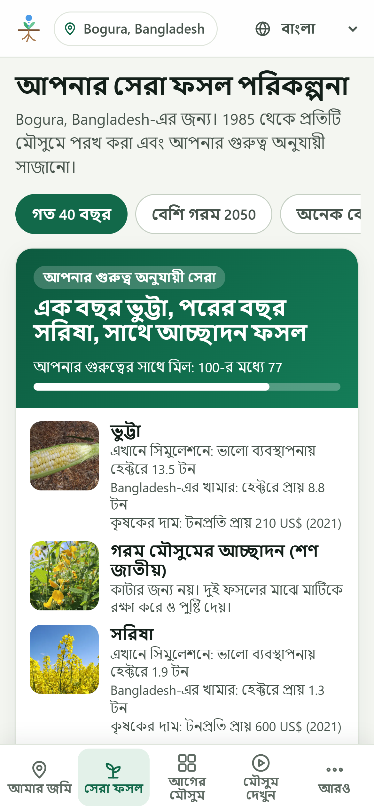
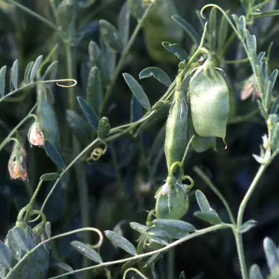
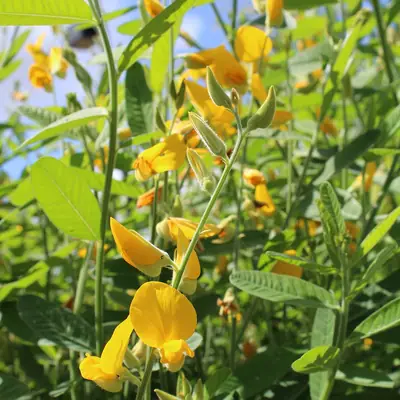
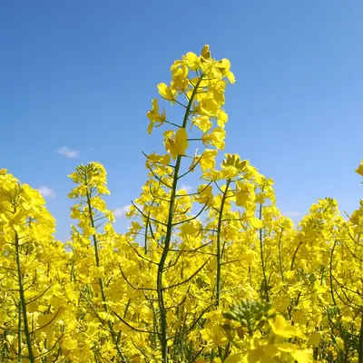
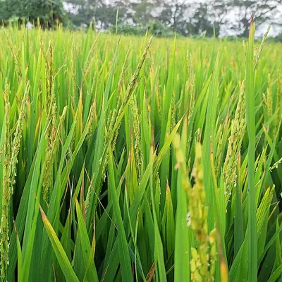

Team Groot
NASA Space Apps Challenge 2026 · Field Shift: Adapting Farms with NASA Data
From the sky to the root


A farmer gets about 40 seasons.
Rains shift, heat strikes at flowering, bare soil washes away.


One real field in Bogura, Bangladesh, through a year from space: NASA HLS (Landsat and Sentinel-2). Green is crop; pale brown is bare soil.
Test-drive your next crop rotation on 40 years of NASA data, before you plant.
Three questions. One answer.


Every season since 1985, then a hotter 2050

One small change, tested on 81 seasons
Rice land in Bogura, Bangladesh. Simulated on NASA POWER and GPM IMERG; 2050 is the middle of 5 climate models.
Rice, then wheat
Rice, then mustard, plus a cover crop
Every plan also says why it came up, the evidence, what is unknown, and what to check locally.
Field Shift: Adapting Farms with NASA Data
Build a decision-support tool that uses NASA Earth observations, local soil, crop traits and farmer priorities, so farmers can explore crop rotations that strengthen soil health and adapt to changing weather and water.
The best plan, in about 10 seconds

Watch any season, day by day

The NASA data inside
Checked against data it never used

Free, on the web and as an app
- Works on any smartphone, no login
- In multiple languages, including Bangla

The data is there. The answers are not.
NASA measures rain, heat, soil moisture and greenness for every field on Earth, as data files.
From the sky to the root
Why rotate?

LegumesAdd nitrogen to the soil
Cover cropsKeep living roots in the soil between harvests
Deep rootsOpen the subsoil and reach stored water
New crop familiesBreak pest and disease cyclesAny field on Earth. Free, in multiple languages.
Team Groot · NASA Space Apps Challenge 2026
Satellite pictures: NASA HLS through NASA GIBS.